主要用于CAN参数的配置管理。
一般情况下，针对多个客户，硬件设备会使用同一套协议进行实现， 但客户会有个性化的要求，比如只显示部分CAN字段。
另外，由于信息不一致及领域知识有限，大数据标识的CAN信息 会与真实情况有出入，就需要本地化处理，比如单位、命名等信息。
database：数据库连接
canConfig：大数据CAN字段XML
canGroup: CAN分组归类，编码与业务数据库保持一致
appsettings：工具使用的key
#1 日期时间
#2 数字枚举，比如 0-不报警,1-报警,2-错误,3-未定义
#3 数据，将与【公式转换】、【小数位】进行统一处理
#5 文本枚举，将文本转换为数字，主要为了数值分析。比如 0-电钥匙关闭,1-电钥匙打开
#6 文本多枚举，将多个文本，转换为多个数字。比如 separator-|,EG03100003117010001-冷却液高温报警,EG03100003117010101-发动机高温报警
#7 多字段组合多枚举值，将多个字段进行组合展示。比如 4020,4021,4438,4439，目前只针对故障码，SPN、FMI、CM、OC。
#4 其他，默认显示原始值
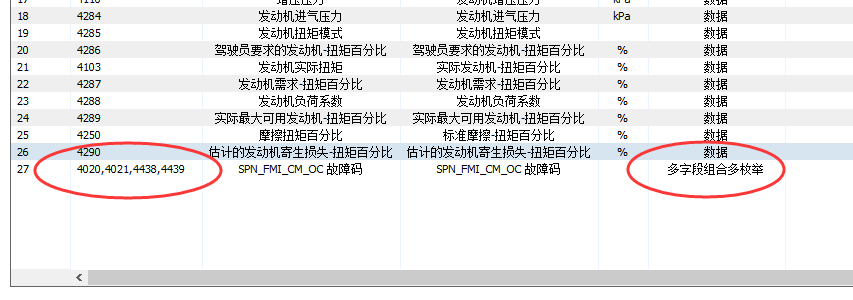
此字段只针对数据类型的数据进行公式转换处理，比如大数据返回的总时长为3600秒，要展示为小时，需要设置为x/3600。此时，数据类型需要设置为 #3。
在 #3 的情况下，参与数据转换处理。
是否可用来进行数据分析，以对车辆进行问题排查。一般情况下，是具有一定意义的数据或状态值，多指标对比来分析问题。
0、不可分析；1、可分析；2、默认分析项。
所有的CAN字段定义，在大数据平台，都有一份xml名录。每一个CAN字段，都分配一个唯一的ID、字段英文名。
查询某台车的CAN历史，就是以终端编号查询，在本地根据ID进行解析过滤。
或者以 终端编号 + 某些字段名，按需查询，并在在本地进行解析过滤。
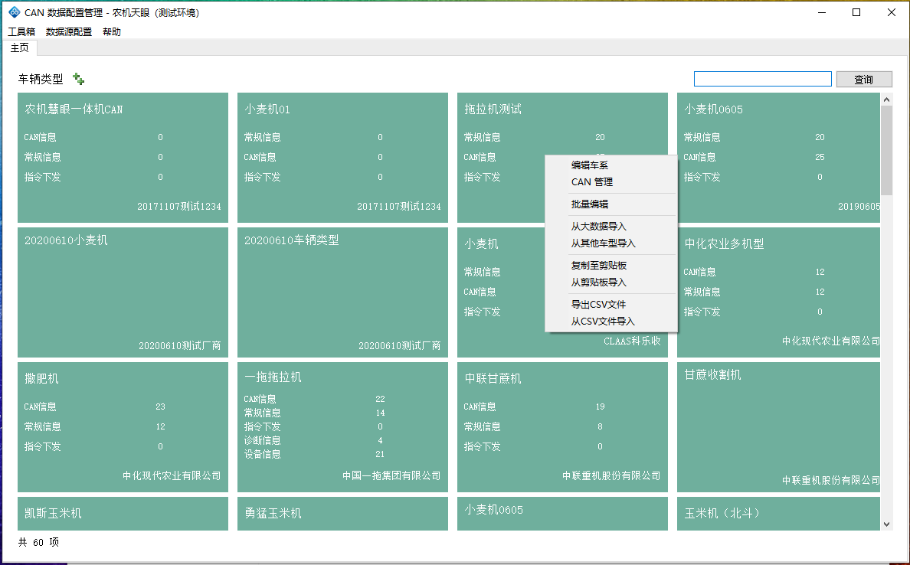
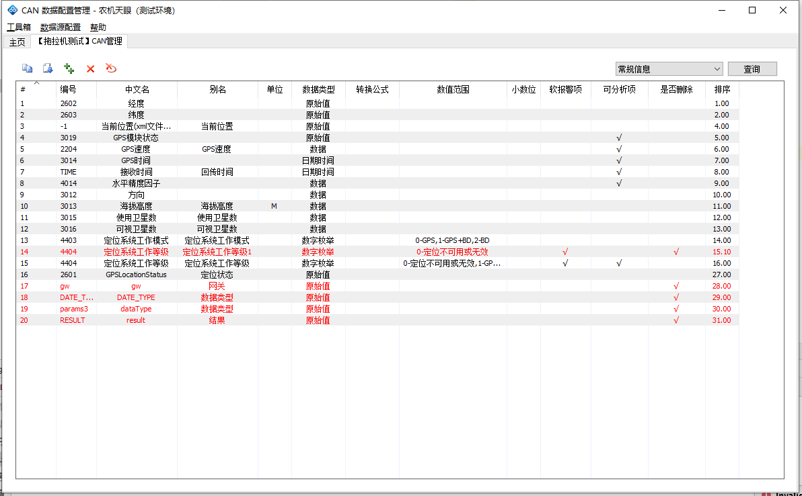
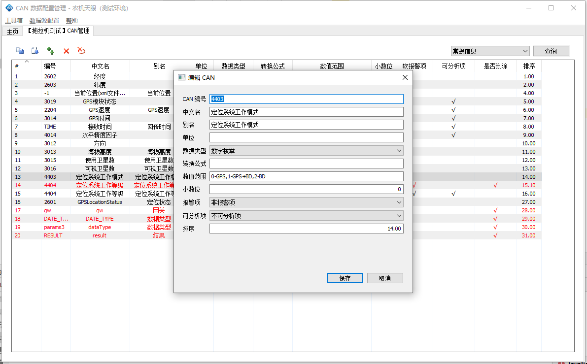
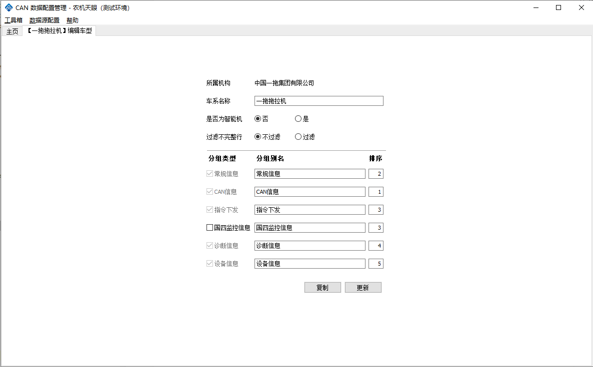
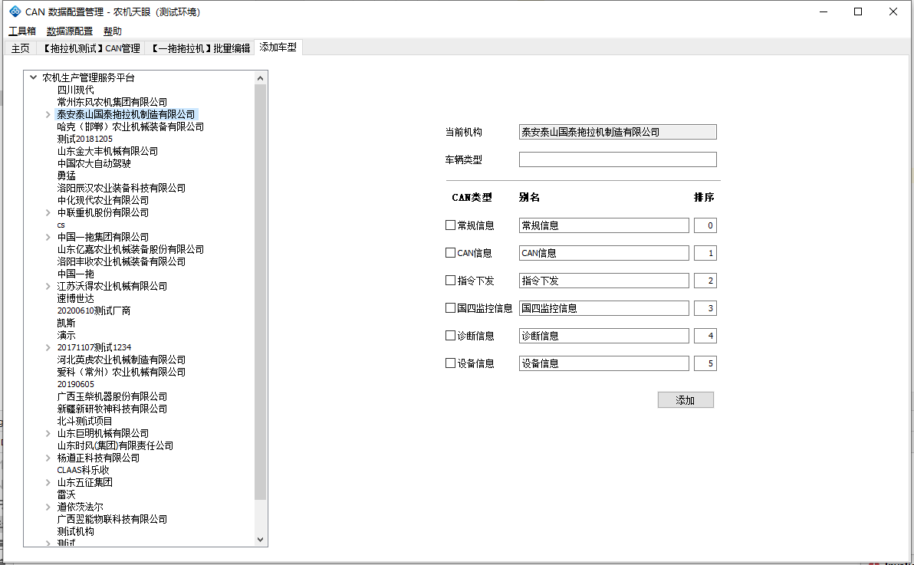
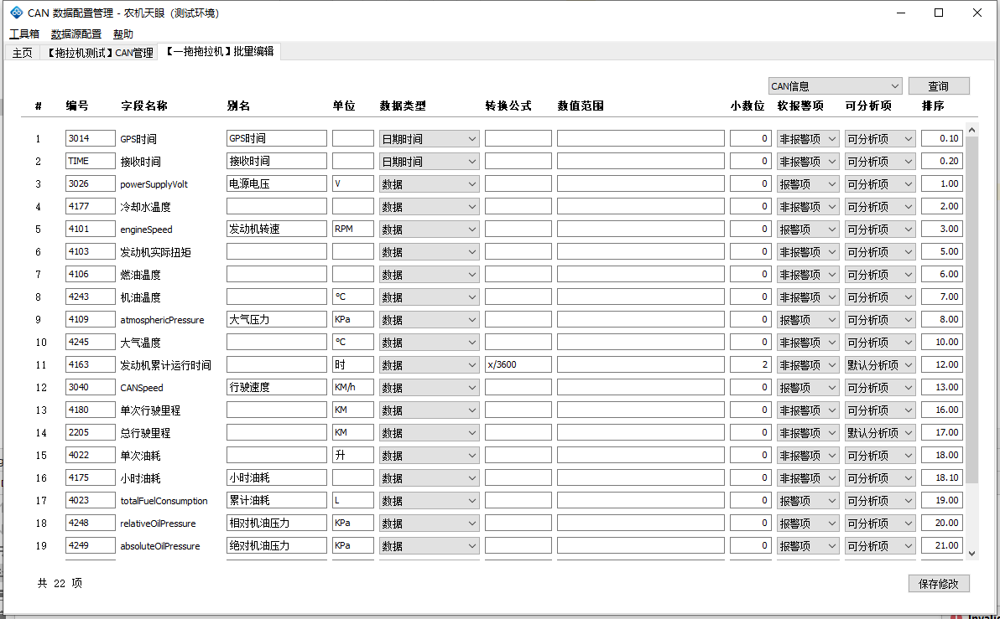
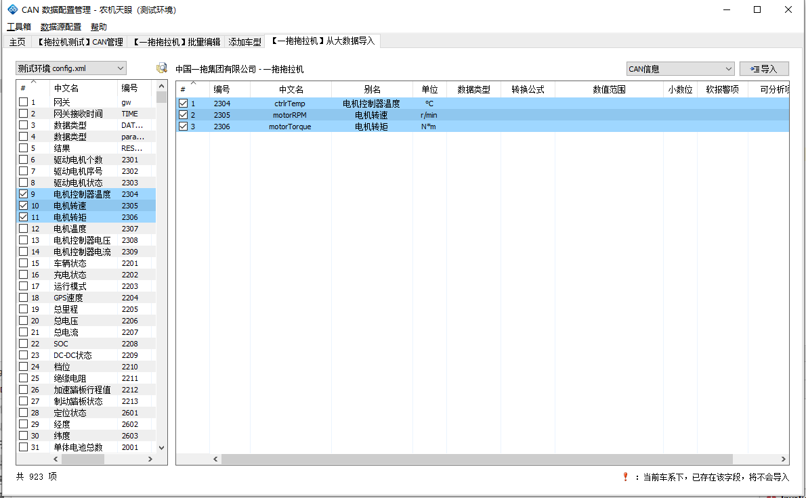
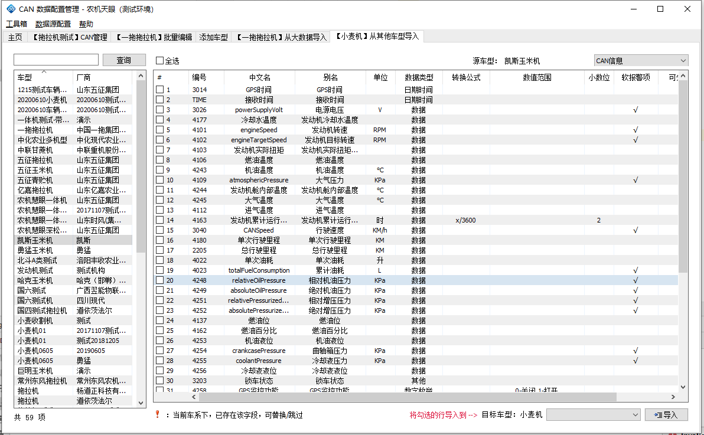
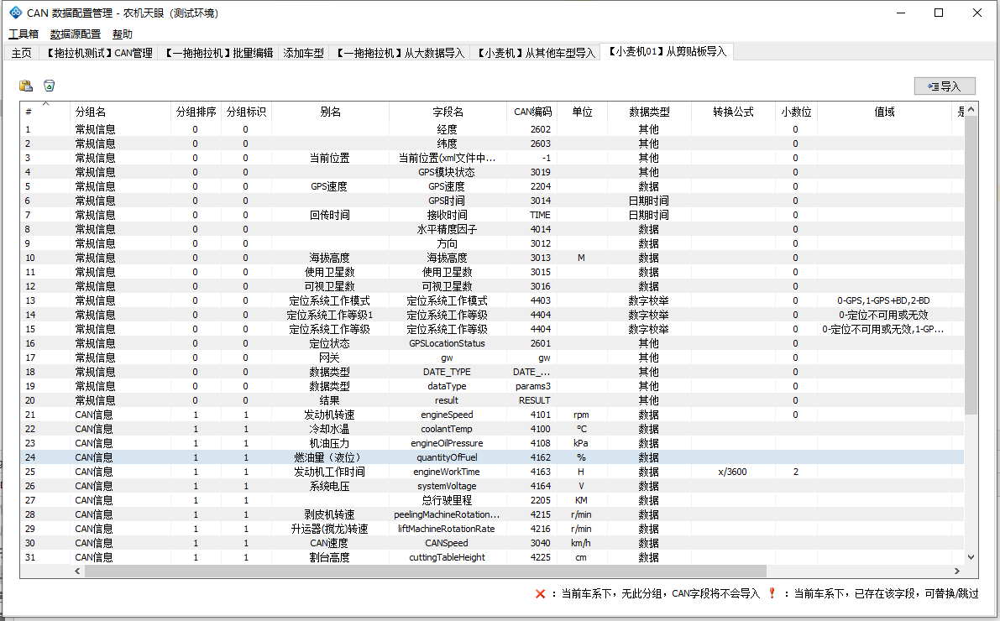
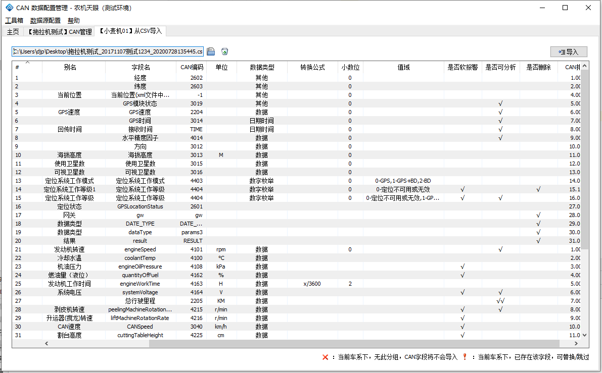
批量导出，需要选择文本文件，文件内容为多个设备编号，换行显示。输出文件包括两部分，一部分是统计文件，一部分是数据文件。
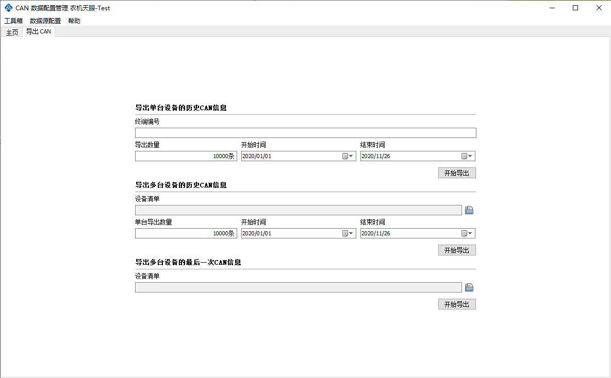